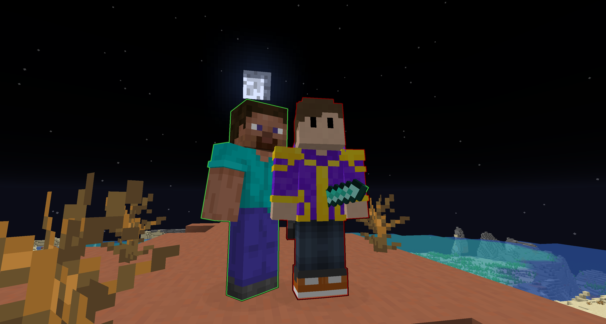

Masz pomysł na wspólny projekt? 🤝
Jeśli czujesz, że możemy razem zrobić coś fajnego – śmiało odezwij się!
Chętnie współpracuję zarówno z twórcami, markami, jak i osobami po prostu z dobrą energią.
Potrzebujesz partnera do eventu, szukasz ambasadora serwera, a może chcesz zaprosić mnie do ciekawego projektu?
Najlepiej napisz na welnianyy.biznes@gmail.com
lub złap mnie na moim serwerze Discord:
[Kliknij, by Dołączyć!].
Odpowiadam na ciekawe propozycje, jestem otwarty na nowe pomysły i nie boję się wyzwań.
Odezwij się — nawet jeśli masz po prostu pytanie albo chcesz się przywitać!
Kim jestem? Co tutaj znajdziesz?
Hej! Tu Wełniany. Minecraft, YouTube, kodowanie — w tym siedzę praktycznie od dziecka. Swoje pierwsze materiały wrzucałem na YouTube już ponad 10 lat temu i od tamtej pory cały czas coś tworzę, kombinuję i uczę się nowych rzeczy.
Serwery Minecraft prowadzę już z 8–9 lat, a skrypty piszę, odkąd tylko ogarnąłem jak działa Java, tekstowy edytor i… trochę cierpliwości. Czasem eksperymentuję też z animacjami, grafiką 2D/3D czy nawet prostymi grami w Unity — lubię po prostu sprawdzać, na ile sam dam radę coś ogarnąć od zera.
Ta strona to taki mój mały “projekt poboczny” — wszystko tu powstało ode mnie, na próbę, z ciekawości i chęci nauczenia się nowych rzeczy. Nie jestem wielką firmą, nie zlecam nic agencjom, lubię działać po swojemu i dzielić się efektami z innymi.
Jeśli czujesz podobny klimat — zapraszam. Pogadajmy, pograjmy, pośmiejmy się albo wymyślmy coś kreatywnego razem!
Wpadnij na kanał i zobacz, co się dzieje!
a moim kanale YouTube znajdziesz wszystko, co sam chciałbym oglądać: poradniki, nagrania z live’ów, testy pomysłów i autorskie skrypty do Minecrafta.Staram się pokazywać, że Minecraft to nie tylko gra, ale też miejsce na kreatywność, naukę i dobrą zabawę.
Jeśli masz ochotę dowiedzieć się czegoś nowego, złapać inspirację albo po prostu spędzić miło czas — to jest to miejsce dla Ciebie!
Nie wiesz, gdzie zacząć?
Masz ze mną styczność pierwszy raz? Może, któraś z tych playlist Cię zainteresuje? (Na kanale mam więcej Ciekawych filmów, tutaj tylko "przystaweczki" 🤣
Dołącz do Discorda!
Szukasz miejsca, gdzie możesz pogadać z innymi, zapytać o coś, albo po prostu wpaść po dobry humor?
Na naszym Discordzie znajdziesz fajną, otwartą ekipę — nie tylko do Minecrafta! Często można mnie tam spotkać, więc jeśli masz pytanie albo chcesz po prostu się przywitać, śmiało wbijaj i pisz na czacie!
Zapraszamy wszystkich, którzy lubią pozytywną atmosferę. U nas nie ma nudy – zawsze znajdzie się ktoś do rozmowy lub wspólnej gry!
Serwer Minecraft Survival!
Tak, tworzę serwer Minecraft Survival 1.21+. Na razie jest na wczesnym etapie i chwilowo go odłożyłem, żeby po pewnym czasie wrócić do niego z nową energią. Chcę, żeby wyszło jak najlepiej!

PROJEKT ANONIM
Obecnie pracuję nad projektem, w którym wszyscy uczestnicy są anonimowi. Nie można dać się rozpoznać, bo to grozi eliminacją z gry – wygrywa ten, kto utrzyma się najdłużej. 👀
FAQ
Kiedy serwer Minecraft?
— Gdybym sam to wiedział, już bym Wam powiedział! 😅 Na razie projekt jest na bardzo wczesnym etapie. Pracuję nad nim w wolnych chwilach (których nie mam zbyt wiele), więc dokładna data startu serwera to wciąż tajemnica nawet dla mnie. Ale spokojnie — dam znać, jak tylko coś ruszy do przodu!
Jakiego Clienta Minecraft Używam?
— Klasyczny Premium.. Ten od Mojangu.. Te różne dziwne launchery to nie moja bajka.
Czy serwer będzie dostępny dla graczy na Bedrock?
— Serwery, które tworzę są kierowane tylko do graczy Java ;c
Jak można się zaangażować lub pomóc przy projekcie?
— Masz ciekawy pomysł, chcesz coś podpowiedzieć albo po prostu pogadać o serwerze? Śmiało, napisz na moim Discordzie! 🤗 Jeśli chodzi o pomoc przy kodowaniu czy technicznych sprawach, doceniam dobre chęci, ale lubię działać solo.
Dlaczego tworzę serwer?
— Chcę stworzyć fajne miejsce dla społeczności. Takie, gdzie każdy może poczuć się swobodnie i po prostu dobrze się bawić razem z innymi!